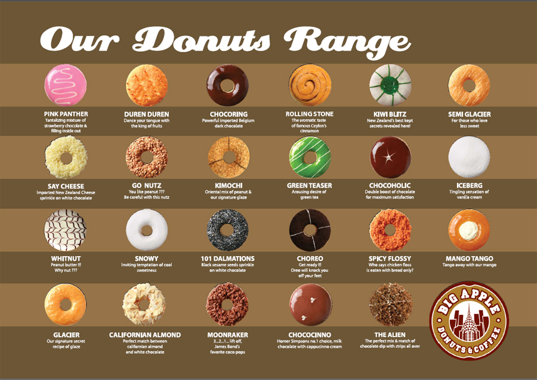

The Nature of External Axioms

Types of Axioms
- Positive ground facts, mixed ground facts, non-ground facts
- Disjunctions of facts (Horn, range restricted, general)
- Full first-order logic
Features of Axioms
- Generally, might be "dirty"
- Inconsistent
- Epistemic and assertional status
- Temporal
Storage of Axioms
- Static: SQL, SPARQL, semantic nets (WWW), RDF
- Dynamic: Executables, WWW services